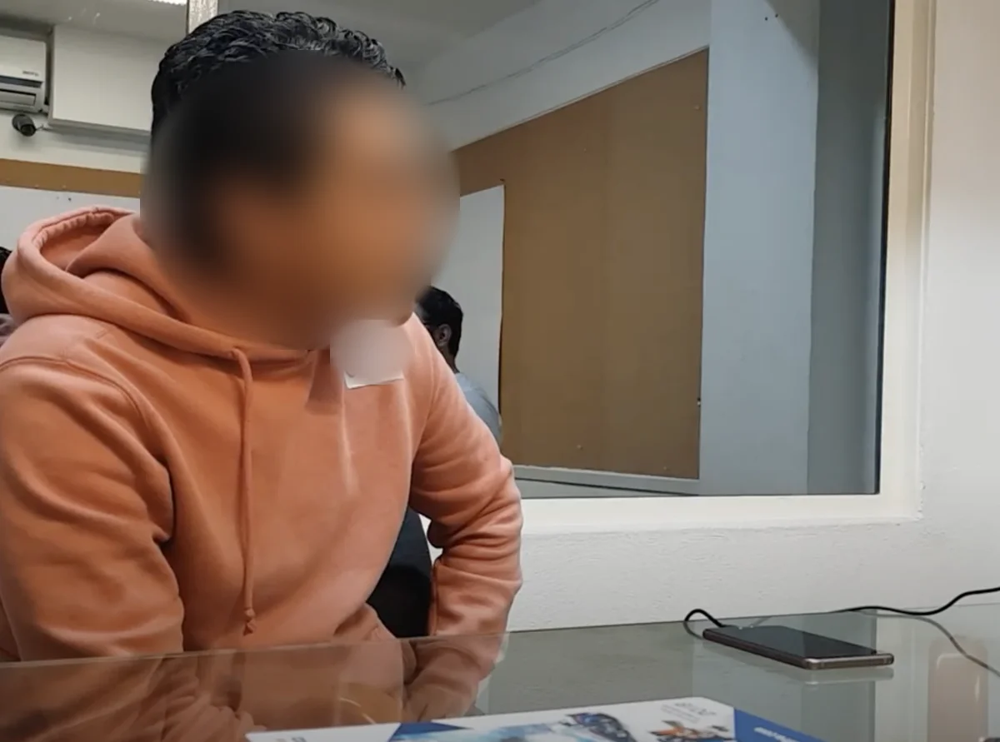
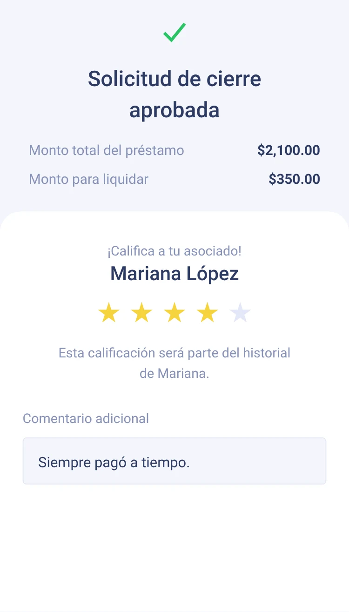

Volana gave trust-based loans to people who lived on cash. Paying them back meant carrying money and documents across town. The app let them sign up, track and pay their loans without a trip to the branch, by bank transfer or in cash at an OXXO store.
My role
As Lead UI Designer, I defined the visual style, built the UI kit, designed the information architecture and the loan request and admin flows, and managed the design backlog.
Impact
People who had always paid in person chose the app.
60% of in-branch customers became early adopters in the first month
02. The challenge
Every payment was a trip with cash
The risk wasn’t one trip. It was a daily route.
Volana lent around MXN 20,000 to one person, who shared it with people they trusted: their credit circle of associates. That lender then collected each payment themselves. In focus groups we learned that some spent the whole day on public transport, picking up cash from their associates and a new associate’s documents to sign them up at the branch.
The problem
How might we keep lenders and their associates safe, and let new people join, without anyone carrying cash or documents across town?
The lender’s journey before the app
From focus groups: what each step needed from the person in the middle, how it felt, and what the app changed.
NeedFeelingPain pointWith the app
01 Sign up an associate
Need
Add someone they trust to their credit circle.
Feeling
😟Worried
Pain point
Carrying the new associate’s IDs and papers to the branch by bus.
With the app
Identity confirmed with Veriff, from home.
02 Lend
Need
Decide how much to lend, and to whom.
Feeling
🙂Confident
Pain point
Only memory and word of mouth to judge who pays well.
With the app
Each associate’s rating and track record next to the amount.
03 Collect
Need
Get each associate’s payment on time.
Feeling
😩Exhausted
Pain point
A whole day on public transport, house to house, carrying cash.
With the app
Associates pay by transfer or at OXXO; the wallet shows who paid.
04 Pay back
Need
Pay Volana before the due date.
Feeling
😬Anxious
Pain point
Another trip to the branch with all the cash collected.
With the app
Transfer or cash at OXXO, no trip to the branch.
05 Close the loan
Need
Close it, and decide whether to lend again.
Feeling
😌Relieved
Pain point
No record of who paid well to carry into the next loan.
With the app
A rating that becomes part of the associate’s history.
03. Process
Listen first, then test it in their hands
01. Focus group
Hear it from the branch.
We started with a focus group with Volana’s branch customers, led by a moderator while I followed it over a live stream. That’s where we heard about the all-day routes with cash and documents.
02. Workshops
Agree on what’s viable.
I led workshops with developers, legal and sales to decide what each feature needed and what we could build. Out of them came the app’s structure and the flows I designed.

03. Testing
Put it in their hands.
We tested high-fidelity prototypes in person, in rounds, before development. That’s where we learned most people only went online at home, which changed how the app handled notifications and data.
The app’s first structure, drafted in a workshop: Home, Wallet, My network and Notifications, and everything Home had to hold.
04. Key decisions
Change the trip, keep the habit
Each one traces back to something we heard in the focus group, agreed in a workshop or saw in a test.
01. One app, two roles
The lender tracks, the associate pays.
Lenders and associates used the same app and signed in by role, because they needed different things. The lender needed to see who had paid and what was still owed. The associate needed to know how much and when, and a way to pay without a trip.
So the lender’s wallet opens on their next payment to Volana, with the associates who owe this fortnight below it. The associate’s home opens on what they owe, and two ways to pay: a bank transfer, or cash at any OXXO store with a reference. Not everyone used a bank account, so cash had to stay an option.
Based on Focus groups
02. Make trust visible
Lend to people you know, with their track record.
Volana’s loans already ran on trust between people who know each other. The app didn’t replace that judgment; it backed it up with history.
When a lender offers a loan to an associate, they see the associate’s rating and whether they’ve paid well before, next to the amount and the term.
Based on Focus groups · Legal
Continuar
03. Reward on-time payment
Good habits, made visible.
We used behavioral economics: when a loan closes, the lender rates the associate, and that rating becomes part of their history. Paying on time builds a reputation people can see.
Based on Behavioral economics

Cerrar asociadoCancelar
04. Remove the branch from sign-up
No documents carried anywhere.
Everyone who joined, lender or associate, verified their identity in the app with Veriff: a photo of their INE and a selfie. Branch staff uploaded existing customers’ data beforehand, so they only had to confirm it.
The trip with someone else’s papers, the riskiest part of signing up, disappeared.
Based on Legal requirements
Tomar selfie
Design for Wi-Fi, not mobile data
Most people went online at home. The app used little data, and every notification made sense on its own.
Plan the path up
Next, we planned to open circles: after building a history, associates could join other circles and later offer loans themselves.
Screens recreated from the 2019 designs.
05. Reflection
Measure the change, not just the download
Define success first
We tracked adoption only. I’d agree on digital payments, on-time rate and trips avoided before designing.
Motivate, don’t expose
On-time payers earned a rating. I’d test that it never shames people who are late, or pushes anyone to borrow beyond their means.